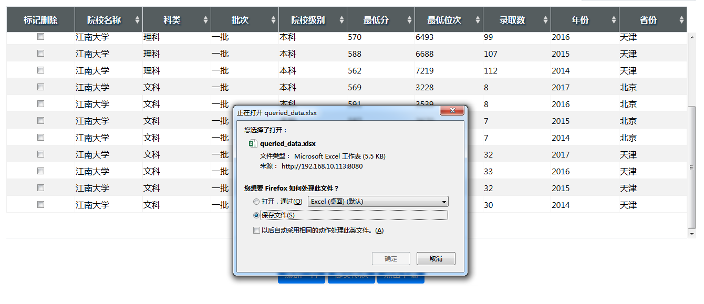

版本：alpha 0.5
更新日期：2020-08-25
基本介绍
本数据微中台项目，只服务于部门内部，方便各位及时把控教育相关动向、运营方法策略；自主完成数据库的增删改查；按需爬取市教育局、阳光高考、知乎等平台信息；按需自主完成高校卡片、同位次流向等数据产品的制作等，更多功能会陆续完善。
根据如上需求，本文档侧重于数据微中台自主操作的从0到1教程，主要包括：
- 数据库管理
- 爬虫
- 数据产品制作
数据库管理
选择数据库
- 点击导航栏中的数据库管理，即可进入『数据库选择』页面
- 点击数据库下方的『选择』，即可进入对应数据库
数据筛选
- 在进入数据库后，可在对应列的输入框中输入筛选条件，规则如下：
| 符号 | 解释 | 示例 | 示例解释 |
|---|---|---|---|
| = | 筛选该列中等于某值的数据 | = 江南大学 | 筛选出所有江南大学的数据 |
| > | 筛选该列中大于某值的数据 | > 500 | 筛选出所有大于500的数据 |
| < | 筛选该列中小于某值的数据 | < 500 | 筛选出所有小于500的数据 |
| ! | 筛选该列不等于某值的数据 | ! 2015 | 筛选出不等于2015的数据 |
| in | 筛选该列取某些值的数据 | in 北京，天津，上海 | 筛选出北京，天津和上海的数据 |
| x | 不筛选某列 | x | 标记在哪列，则哪列不被筛选 |
在如下规则中：
- 首字必须是『符号』；
- 符号后有无空格均可；
- 符号不区分中英文和大小写；
如果非必需，最好不要筛选出全部数据，否则浏览器会因为数据量太大而崩溃！
支持多条件筛选，如下图所示，筛选出江南大学在北京、天津的招生数据，但不包含批次线：
- 完成规则输入后，点击『查看数据』按钮，即可获得筛选结果
修改、添加、删除数据
修改
- 只需点击相应文本框，进行修改即可，已修改的数据会标记颜色。如下所示
添加
- 点击下方『添加一行』按钮，在最下方新出现的空白行中，输入数据即可。如下图，添加“江北大学”数据。
注意：在添加数据时，一定要保证新输入的数据与原始数据类型相同，如院校名称为文本数据，那就必须在下面输入文本，分数必须输入数字，若当前还未收集到该数据，对于文本可以用
-填充，数字用-1填充。
删除
- 在左侧的『标记删除』中，勾选想要删除的数据即可。
提交修改
在完成上述数据修改、添加或删除动作后，点击『提交修改』按钮，即可将所有修改、添加、删除的数据更新到数据库中，并得到更新后的数据。
下载数据
提供两种情况下的数据下载：
-
当需要筛选的数据较多，并且不需要修改数据时，可以在输入筛选条件后，点击『直接下载』按钮后，完成下载。
在此情况下，不会展示筛选后的数据。
-
当需要对数据修改时，应尽量精细筛选条件，减少筛选后的数据条目。在完成筛选，并提交修改后，可点击『点击下载』按钮，即可下载当前显示数据的Excel文件。
注意：若修改数据后，一定要先提交修改，再下载数据。

新建数据库
可以点击【数据库管理】页面中的『新建数据库』按钮，进入数据库新建页面：
步骤为：
- 点击『浏览』，上传准备入库的Excel文件；
- 在左框中，输入数据库名称，会显示为【数据库管理】页面中数据库卡片的标题；
- 在右框中，输入数据库介绍，解释数据库包含内容，会显示为【数据库管理】页面中数据库卡片的详情。
注意事项：
- 上传的Excel文件，每个列都要有列名，并且不重复；
- 没有多级列或行标签；
- 不能包含合并单元格；
- 数据库的上传速度约为每秒200条数据，点击『提交』按钮后，需等数据上传完毕才能进行其他动作。
如下是一个标准的可以入库的Excel文件示例：

爬虫
教育局通知公告爬虫
包含教育局通知公告中的所有文章及附件，文件以如下方式组织：
-
点击『爬虫』-『西安市教育局』，即可进入爬虫页面
- 依次点选爬取的起始和终止时间，点击『爬取』即可启动爬虫
- 等待爬取完成（进度条显示），会提示下载。
知乎用户动态爬虫
包含：用户基本信息
zhihu_user_info.xlsx和用户动态zhihu_user_activities.xlsx。
- 打开某知乎用户主页，复制链接，粘贴到输入框中，如下所示：
- 点击『爬取』，待进度条满后，会提示下载。
知乎问题回答爬虫
爬取知乎某问题下的所有回答。
- 打开知乎某问题，复制链接，粘贴到输入框中，如下所示：
- 点击『爬取』，待进度条满后，会提示下载。
更新日志
- 2020-8-17
上线0.1版本，支持数据的筛选、修改、添加、删除、下载。
-
2020-8-19
- 增加上传文件&新建数据库功能
- 增加筛选后数据排序功能
-
2020-8-20
- 修复上传数据时，数据类型检测问题
- 修复
unable to rollback问题
-
2020-8-21
- 添加
直接下载功能 - 添加首页聚合新闻
- 添加
-
2020-8-24
- 添加西安市教育局通知公告爬虫
- 添加知乎用户基本信息&动态爬虫
-
2020-8-25
- 细化帮助文档
-
2020-8-26
- 添加知乎问题回答爬虫
- 增加知乎爬虫历史数据储存